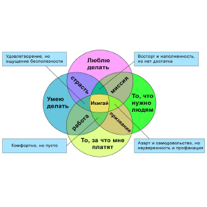
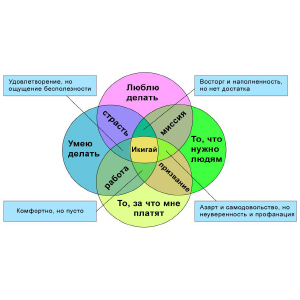

Все сожаления, которые я видел.
"And all these sorrows I have seen.
Привели меня к мысли.
They lead me to believe.
Все, на самом деле, не имеет смысла.
Everything is actually a mess."
Imagine Dragons
Сейчас или никогда.
"It's now or never.
Не хочу жить вечно.
I ain't gonna live forever.
Всего лишь, хочу жить пока живой.
I just want to live while I'm alive."
Bon Jovi
"Есть только миг.
Между прошлым и будущим,
Именно он называется жизнь."
Леонид Дербенёв
Жизнь — это удивительная, но очень непростая вещь. Иногда мы сами создаем себе проблемы и рушим всё. Никто не может вернуться в прошлое и изменить его. Но можно начать всё с чистого листа и создать лучшее будущее. Своей жизнью надо управлять, а не плыть по течению, ожидая, что всё само изменится. Вот несколько дельных советов, с чего можно начать свой путь самосовершенствования. Если ты последуешь хотя бы нескольким рекомендациям, то твоя жизнь будет значительно проще. Ты станешь счастливее и успешнее! Вещи, которые стоит прекратить делать: Перестань проводить время не с теми людьми Не трать драгоценные минуты своей жизни на людей, рядом с которыми тебе плохо. Также не стоит навязываться. Если кто-то действительно захочет тебя увидеть, он обязательно найдет время. Ищи таких людей, которые будут с тобой не только в моменты радости, но и в горе. Встреться со своими проблемами лицом к лицу Не закрывай глаза на свои проблемы, надеясь, что они сами решатся. Нужно учиться на своих ошибках и проблемах, только тогда ты сможешь стать по-настоящему успешным. Именно так формируется личность. Прекрати врать себе Ты можешь обмануть кого угодно, но только не себя. Для того чтобы изменить свою жизнь, нужно быть честным с самим собой. Будь немного эгоистом Даже если ты сильно кого-то любишь, всегда помни о том, что важно для тебя. Помогай другим, но не забывай о себе. Будь собой Не нужно создавать себе кумиров и искать мотивацию в поступках других людей, которые, как ты считаешь, лучше тебя. Главная твоя цель — быть лучше себя вчерашнего, а не лучше, чем кто-то. Не стремись быть похожим на окружающих. Оставайся собой, ведь всегда найдутся люди, которые полюбят тебя настоящего. Отпусти прошлое Ты не сможешь начать новую жизнь, пока не отпустишь старую. Нельзя говорить «не получится» «Я верю, что в жизни надо рисковать, надо бороться за свою идею, надо пробовать», — написал Кен Кизи в своем произведении «Пролетая над гнездом кукушки». Эти слова должны стать девизом всех неуверенных в себе людей. Даже если ты сделал что-то неправильно, это в сто раз лучше, чем вообще ничего не делать. Не пытайся купить счастье Конечно, очень приятно купить что-то дорогое. Но не следует забывать о том, что вещи, которые действительно делают человека счастливым, совершенно бесплатны. К примеру: любовь, дружба, смех. Не конкурируй с окружающими Не беспокойся о том, что у кого-то получается лучше, чем у тебя. Сконцентрируйся на собственных целях и достижениях. Успех — это борьба, которая происходит только внутри себя. Прекрати завидовать Зависть — это, когда ты считаешь кого-то лучше себя. Не забывай, что ты также обладаешь ценными качествами, которые хотели бы иметь окружающие. Хватит себя жалеть Жизнь подбрасывает не только приятные сюрпризы. В любом случае, ты поймешь, что в конце концов оказался в лучшем месте и с хорошими людьми. Себя жалеют только неудачники. Отпусти обиды Не держи ни на кого зла. Так ты ранишь только себя, а не людей, на которых таишь обиду. Прощать нужно не только других людей, но и себя в первую очередь. Не оправдывайся Близкие, друзья и так тебя поймут - остальные, всё равно не поверят. Просто делай так, как сам считаешь нужным, и ни перед кем не оправдывайся. Обращай внимание на приятные мелочи Получай удовольствие даже от самых незначительных мгновений жизни. Однажды ты поймешь, что это и были действительно важные вещи. Не вини других в собственных проблемах Ты сам должен нести ответственность за свою жизнь. Если ты кого-то обвиняешь в своих неудачах, ты даешь ему власть управлять твоей жизнью. Не пытайся нравиться всем Это невозможно. Такая попытка просто отнимет у тебя силы. Нельзя угодить всем. Будь собой. Перестань много беспокоиться Беспокойство не избавит тебя от завтрашних трудностей, но при этом оно отнимет сегодняшние радости. Спроси себя: «Будет ли это важно через год?» Если ответ «нет», то не стоит об этом беспокоиться. Старайся думать о хорошем Позитивное мышление — это то, что ведет к успеху. Если ты думаешь о том, что сегодня с тобой случится что-то прекрасное, то будь уверен, что так и произойдет. Будь благодарным Просто будь благодарен за свою жизнь. Вместо раздумий о том, чего тебе не хватает, акцентируй внимание на том, что у тебя есть. Выйди за пределы зоны комфорта Будь открыт всему новому и ничего не бойся. Это принесет тебе успех.
Автор неизвестен.
По сути, жизнь это дорога, в виде течения времени. Дорога с началом в пункте "Рождение" и концом в пункте "Смерть". Три основные фазы дороги: Пройденный путь - прошлое. Каким бы оно не было, оно дало тебе урок. Урок, который нужно понять, который не стоит забывать - жизнь любит повторять уроки которые мы не усвоили с первого раза... Прошлое - ценный, но опасный багаж. Нужно хорошо ориентироваться в том, что и где в нем лежит, но ним нельзя злоупотреблять. Ведь можно бесконечно рыться в нажитом, дойдя до конечной, так и не увидев чего-то нового... Предстоящий путь - будущее. Вещь, в которую нужно искренни верить, не смотря ни на что. К которой необходимо себя всячески готовить. Которую глупо бояться - будешь верить в себя, как-то да прорвёшься! Только, не стоит зацикливаться на предстоящем. В психологии есть такой принцип: чем больше ожиданий по поводу какого-то события, тем выше вероятность сокрушительного разочарования. Больше ждёшь — меньше получаешь, меньше ждёшь — больше получаешь. Принцип железобетонный, никаких исключений. Только надежда, а не уверенность. Настоящее. Самая важная фаза дороги. Фаза, зависящая от тебя. От того, какие мысли ты будешь обдумывать, какие отсеешь. Что ты выберешь: злость или любовь, отчаяние или веру, проявишь слабость или силу... На этом этапе нельзя избегать ответственности - слишком много зависит от тебя самого. От того, будешь ли ты радоваться доступным сейчас мелочам, или угнетешь себя тем, что было, тем, что будет. Сейчас, прямо в эту секунду - все в твоих руках! Какай смысл дороги? Не нужно искать ответ на этот вопрос у других. Каждый должен найти его сам! Выбирайте сами...
 
